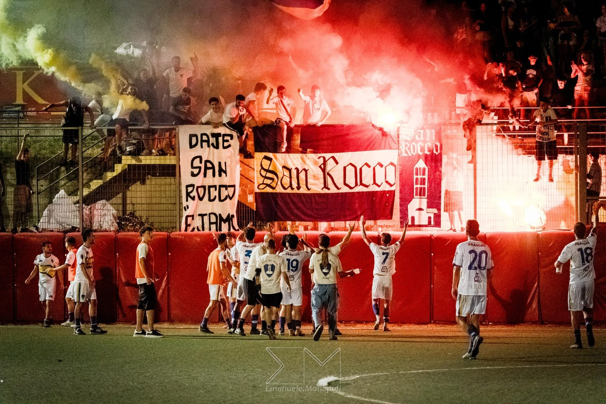
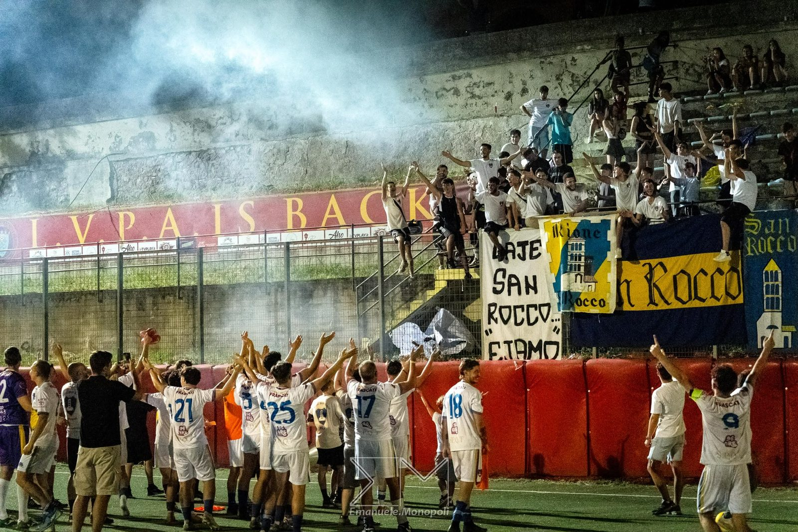
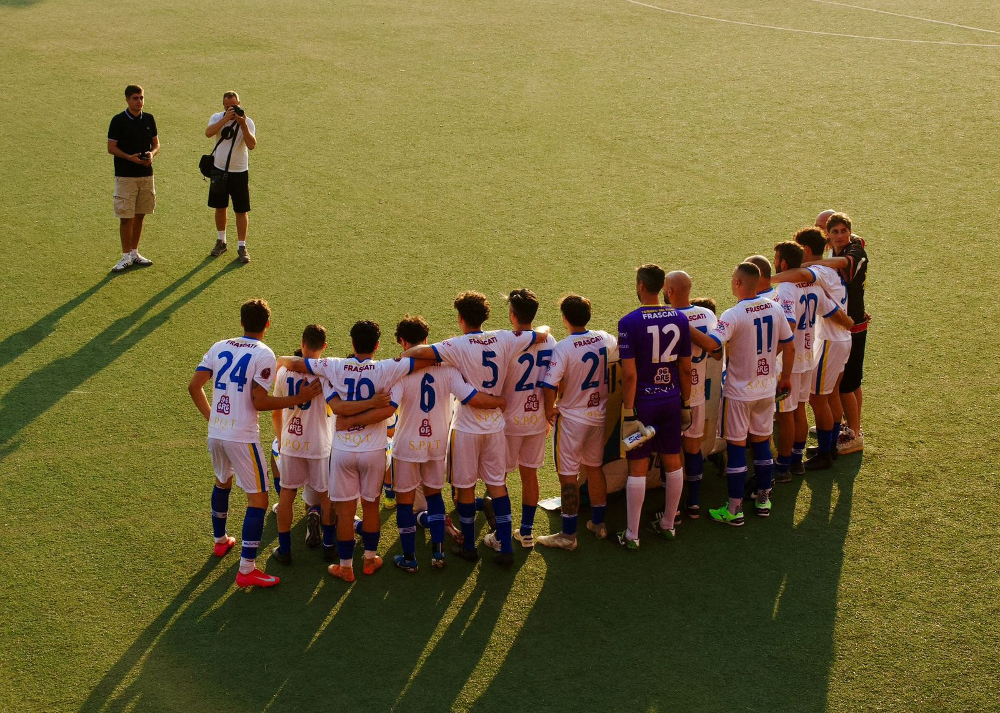
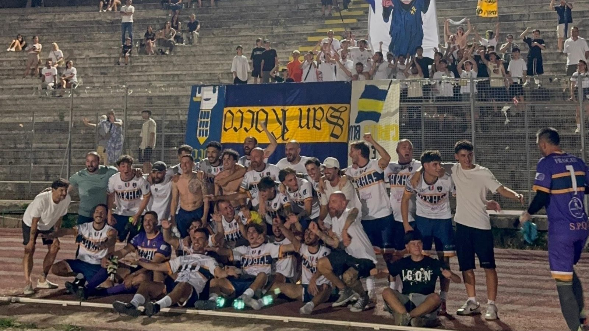
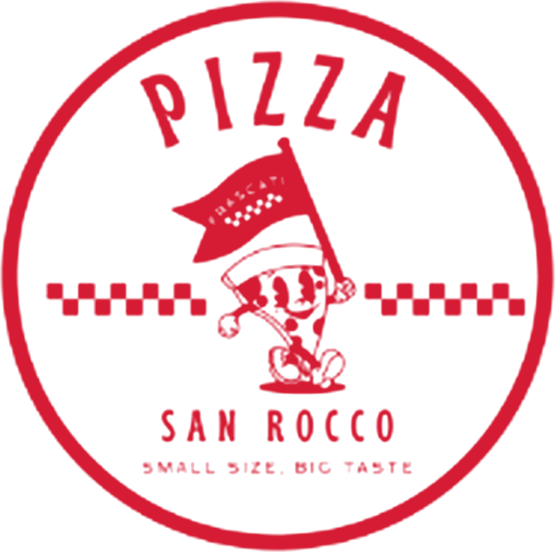

2025
Campioni e Supercoppa
Vinciamo il primo Torneo dei Rioni: finale il 2 luglio, 1-0. Poi arriva anche la Supercoppa, 2-0 contro la vincitrice dei rioni di Monte Porzio.
Bianca per i giocatori di movimento, blu per i portieri: tutte e due con la fascia sul petto e lo stemma al centro. Davanti Garage, sulla schiena Gluck, sui pantaloncini Pizza San Rocco.
Striscioni dipinti a mano, bandiere, cori dal primo all'ultimo minuto. Il San Rocco è prima di tutto la sua gente: ragazzi, famiglie, chi il rione lo vive da una vita.



I venti giocatori e lo staff di Piazza San Rocco per la Frascati Cup, il torneo invernale di calciotto, da ottobre a marzo.
D'inverno si gioca a calciotto: otto contro otto, campo più stretto, ritmo più alto. In campo scendiamo come Piazza San Rocco.
Calendario ufficiale della Frascati Cup. Il risultato compare qui dopo ogni partita. In caso di cambi di data o orario valgono le comunicazioni degli organizzatori.
Dieci rioni, uno stadio, un mese di partite all'8 Settembre. Il San Rocco c'è dalla prima edizione, con la sua gente sempre dietro la rete.
Vinciamo il primo Torneo dei Rioni: finale il 2 luglio, 1-0. Poi arriva anche la Supercoppa, 2-0 contro la vincitrice dei rioni di Monte Porzio.
Dieci rioni in campo. Ci fermiamo a un passo dalla finale. Nello sport si vince e si perde.
Il torneo invernale di calciotto a 8, da ottobre a marzo. Deve ancora cominciare: la storia è tutta da scrivere.
In caricamento...

Prima e dopo la partita, ci vediamo al Garage.
@garagesanroccoPiccola di formato, grande di gusto.
@pizza_sanrocco_frascati
Hai un'attività a Frascati e vuoi stare al fianco del rione? Scrivici, ne parliamo volentieri.
Scrivici su InstagramIn breve: questo sito non usa cookie, non fa statistiche sui visitatori, non ha moduli da compilare e non ti chiede nome, email o altri dati. Per questo non compare nessun avviso sui cookie.
Il sito rionesanrocco.github.io è gestito dal Rione San Rocco di Frascati (RM), che è il titolare del trattamento dei dati descritti in questa pagina.
Per qualsiasi richiesta puoi scriverci in privato su Instagram: @rionesanrocco.
Noi non raccogliamo dati su chi visita il sito. L'unico trattamento è tecnico e lo fa il servizio che ospita le pagine:
La base giuridica è il legittimo interesse a rendere il sito raggiungibile e sicuro (art. 6, par. 1, lett. f del Regolamento UE 2016/679). I dati possono essere trasferiti negli Stati Uniti: GitHub dichiara di aderire al Data Privacy Framework UE-USA e di usare le clausole contrattuali standard della Commissione europea. Tempi di conservazione e dettagli sono nell'informativa privacy di GitHub.
Il sito non installa cookie, né propri né di altri, e non usa altri strumenti di tracciamento: niente statistiche, niente pubblicità, niente pulsanti social incorporati. Anche i caratteri tipografici sono caricati dal sito stesso, senza collegamenti a servizi esterni.
Se in futuro aggiungeremo funzioni che usano cookie, aggiorneremo questa pagina e, dove la legge lo prevede, chiederemo prima il tuo consenso.
Nel sito ci sono collegamenti a Instagram (il nostro profilo e quelli degli sponsor) e a Google Maps (il campo di gioco). Sono semplici link: finché non li tocchi nessun dato viene inviato a questi servizi. Quando li apri passi su siti di altri, che trattano i dati secondo le loro regole.
Sul sito compaiono i nomi dei giocatori della squadra e alcune foto della squadra e dei tifosi, pubblicati per raccontare l'attività sportiva del rione.
Se sei in una foto o nell'elenco e vuoi essere tolto, scrivici su Instagram: provvediamo senza chiederti il motivo.
Puoi chiederci in ogni momento di sapere quali dati che ti riguardano trattiamo, di correggerli, cancellarli o limitarne l'uso, e puoi opporti al trattamento (artt. 15-22 del Regolamento UE 2016/679). Se ritieni che i tuoi dati siano trattati in modo scorretto puoi presentare reclamo al Garante per la protezione dei dati personali.
Ultimo aggiornamento: 10 ottobre 2026